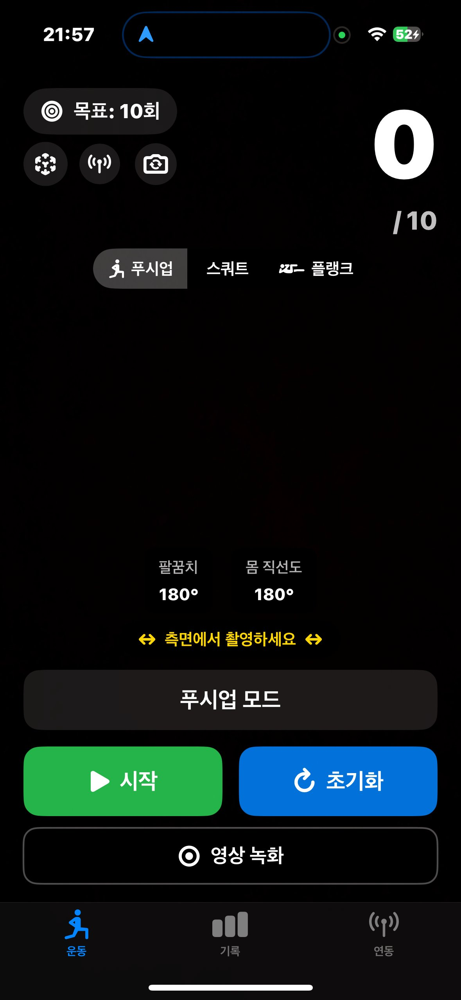
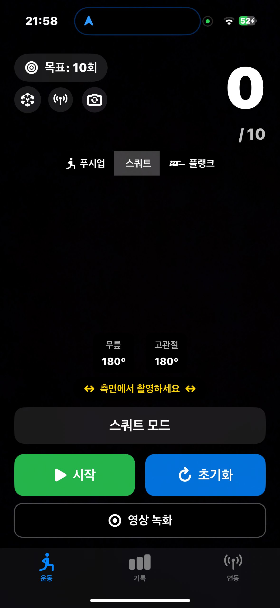
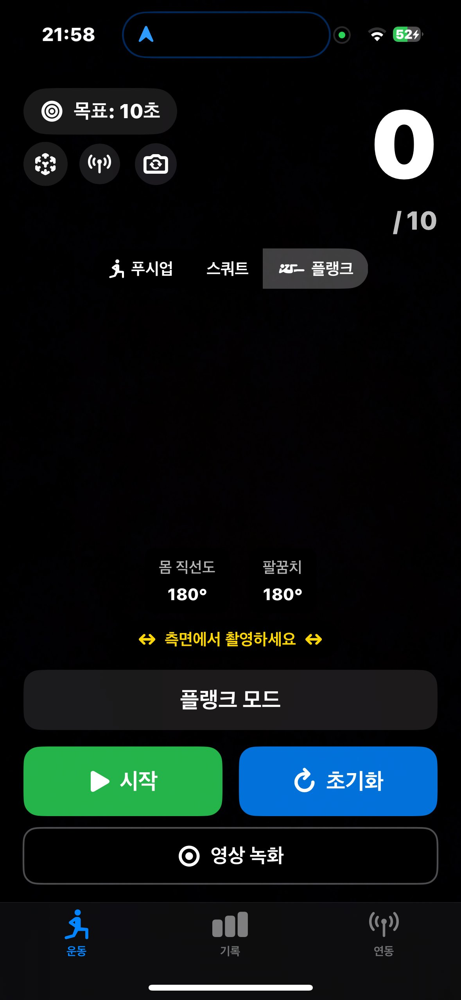
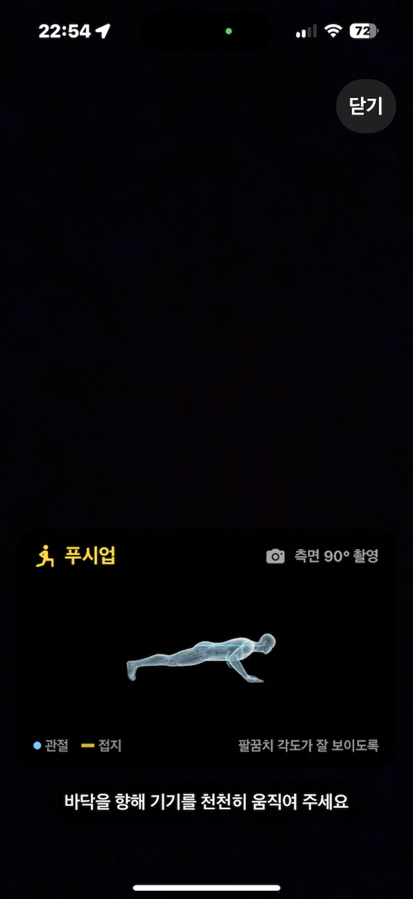
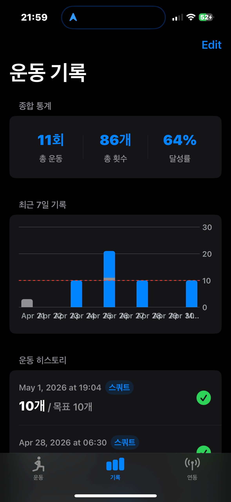
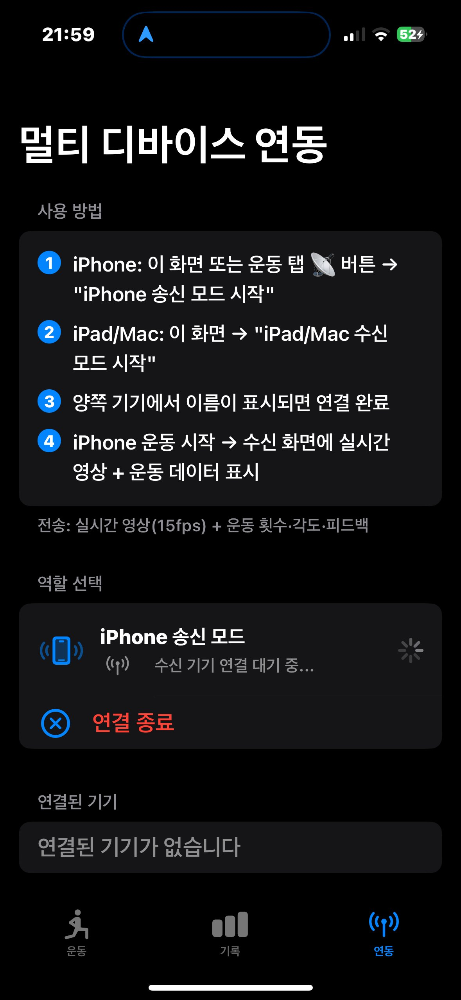

iPhone 카메라가 당신의 운동을 관찰합니다.
AI가 관절 각도를 실시간 분석하고 횟수를 자동 카운트하는
가장 정직한 홈트 트래커.

각 운동에 최적화된 자세 분석 알고리즘이 적용되어 있습니다. 측면에서 촬영하면 핵심 관절의 각도를 실시간으로 측정합니다.
가슴이 바닥에 가까워질 때마다 1회로 카운트합니다. 팔꿈치와 몸의 직선도를 동시에 측정해 정확한 자세에서만 카운트가 올라갑니다.

무릎과 고관절의 각도를 함께 측정해 충분히 깊은 스쿼트만 카운트합니다. 하프 스쿼트로는 카운트가 올라가지 않습니다.

목표 시간(초) 동안 자세를 유지합니다. 몸이 직선을 유지하지 못하면 자동으로 측정이 일시정지됩니다.
On-device 머신러닝 모델이 14개 핵심 관절을 추적합니다. 서버로 영상이 전송되지 않으므로 빠르고, 안전합니다.


운동을 끝낼 때마다 자동으로 기록이 저장됩니다. 숫자가 쌓일수록 다음 운동에 대한 동기가 생깁니다.
큰 화면으로 자기 자세를 확인하고 싶을 때, iPhone을 송신 모드로 설정하고 iPad나 Mac을 수신 모드로 두면 실시간 영상과 운동 데이터가 동시에 전송됩니다.

앱을 처음 열었을 때 이렇게 따라 하시면 첫 운동을 빠르게 시작할 수 있습니다.
매트의 옆쪽에 iPhone을 세로 또는 가로로 거치합니다. 카메라가 몸의 측면을 정면으로 바라보도록 90° 각도를 맞춰 주세요.
상단 탭에서 푸시업·스쿼트·플랭크 중 하나를 선택하고, 좌측 상단 "목표" 버튼으로 횟수(또는 시간)를 설정합니다.
초록색 "시작" 버튼을 누르면 카운트다운 후 측정이 시작됩니다. 화면에는 관절 각도와 현재 횟수가 실시간 표시됩니다.
하단 "기록" 탭으로 이동하면 종합 통계, 최근 7일 그래프, 전체 운동 히스토리를 볼 수 있습니다.
하단 "연동" 탭에서 iPhone 송신 모드를 켜고, iPad나 Mac에서 수신 모드를 켜면 두 기기가 자동으로 연결됩니다.
하단의 "영상 녹화"를 활성화하면 운동 중 영상이 함께 저장됩니다. 사진 앱에서 다시 보며 자세를 점검할 수 있습니다.